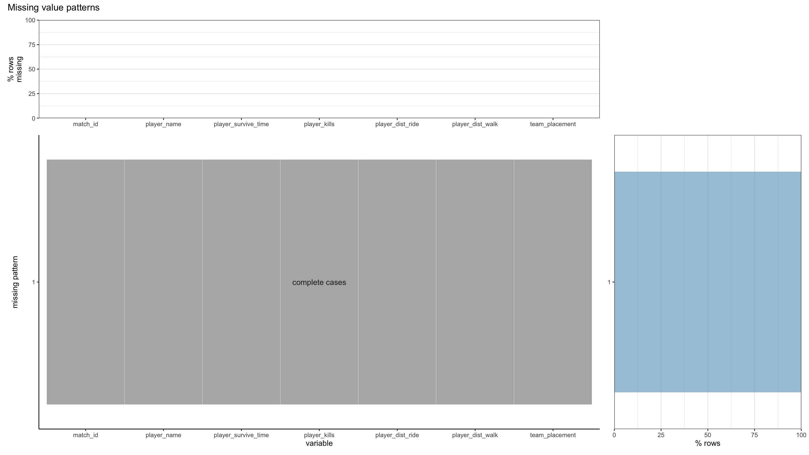

Chapter 4 Missing values
The data set that we are working on contains two kinds of data, kill data and match data, each consists of four subsets of around 2GB on a singular subset. For this analysis we only used the last dataset of the kill and match data.
| killed_by | killer_name | killer_placement | killer_position_x | killer_position_y | map | match_id | time | victim_name | victim_placement | victim_position_x | victim_position_y |
|---|---|---|---|---|---|---|---|---|---|---|---|
| M249 | 0932313woaini | 7 | 529007.7 | 440035.5 | MIRAMAR | 2U4GBNA0YmkBbLEF24GGKLLAPoDQjAD8DoJFecsw9jUiNEkyvGCnOFxmxlo9x0cc | 1209 | GODusopp | 11 | 526111.8 | 432951.8 |
| Kar98k | arunrunrun | 6 | 440414.8 | 285918.1 | MIRAMAR | 2U4GBNA0YmkBbLEF24GGKLLAPoDQjAD8DoJFecsw9jUiNEkyvGCnOFxmxlo9x0cc | 1096 | TheOnly_0ne | 13 | 438853.4 | 280981.6 |
| Down and Out | Rabbit812 | 6 | 439923.2 | 282419.0 | MIRAMAR | 2U4GBNA0YmkBbLEF24GGKLLAPoDQjAD8DoJFecsw9jUiNEkyvGCnOFxmxlo9x0cc | 1096 | NOAIM1 | 13 | 437034.8 | 282477.7 |
| Down and Out | 0932313woaini | 7 | 530312.4 | 440969.0 | MIRAMAR | 2U4GBNA0YmkBbLEF24GGKLLAPoDQjAD8DoJFecsw9jUiNEkyvGCnOFxmxlo9x0cc | 1209 | liweiliwei | 11 | 528304.4 | 439696.8 |
| SCAR-L | sa11y1126 | 3 | 466609.2 | 409546.3 | MIRAMAR | 2U4GBNA0YmkBbLEF24GGKLLAPoDQjAD8DoJFecsw9jUiNEkyvGCnOFxmxlo9x0cc | 1793 | PKBskg | 5 | 462901.5 | 403350.5 |
| Bluezone | NA | NA | NA | NA | MIRAMAR | 2U4GBNA0YmkBbLEF24GGKLLAPoDQjAD8DoJFecsw9jUiNEkyvGCnOFxmxlo9x0cc | 1505 | 0932313woaini | 7 | 495367.2 | 419491.3 |
First we take a look at the kill data set, which tracks the kill information of each game.
The data set contains the following variable:
kill_by: method/weapon of killing
killer_name: player name of the killer
killer_placement: killer final ranking of the game
killer_position_x: killer x-coordinate on the map, ranging from 0 to 800000
killer_position_y: killer y-coordinate on the map, ranging from 0 to 800000
map: map of the game, there are currently four maps in PUBG, which are Erangel, Miramar, Sanhok, and Vikendi
match_id: unique identification of the game, which can be mapped to the match dataset
time: death time, measured by seconds
victim_name: player name of the victim
victim_placement: victim final ranking of the game
victim_position_x: victim x-coordinate on the map, ranging from 0 to 800000
victim_position_y: victim y-coordinate on the map, ranging from 0 to 800000
From the missing pattern graph we can see that most of the data in the data set is complete, consisting of over 10 million/almost 90% of data. The next significant missingness is of the killer information, which makes sense because in PUBG player can be killed not only by other players but also other reasons such as bleeding out due to bluezone, in which case there will not be a killer.
There is also missing values on victim_placement and map, which I would deem as wrong values because these information should be present in the data under any circumstance. In this case, I would consider dropping these values.
| date | game_size | match_id | match_mode | party_size | player_assists | player_dbno | player_dist_ride | player_dist_walk | player_dmg | player_kills | player_name | player_survive_time | team_id | team_placement |
|---|---|---|---|---|---|---|---|---|---|---|---|---|---|---|
| 2017-10-31 02:41:53 | 95 | 2U4GBNA0YmmhivBOFUiipklIPVdC0DRgkX88eyhTYGiAnoXrjvEhNQHZMWi8d5y9 | tpp | 1 | 0 | 0 | 0.000 | 37.91984 | 20 | 0 | m3xdave | 106.351 | 100000 | 88 |
| 2017-10-31 02:41:53 | 95 | 2U4GBNA0YmmhivBOFUiipklIPVdC0DRgkX88eyhTYGiAnoXrjvEhNQHZMWi8d5y9 | tpp | 1 | 0 | 0 | 292.205 | 3457.03613 | 387 | 3 | UDaddyHere | 1690.021 | 100006 | 8 |
| 2017-10-31 02:41:53 | 95 | 2U4GBNA0YmmhivBOFUiipklIPVdC0DRgkX88eyhTYGiAnoXrjvEhNQHZMWi8d5y9 | tpp | 1 | 0 | 0 | 0.000 | 106.21590 | 0 | 0 | Dummy05 | 103.415 | 100010 | 89 |
| 2017-10-31 02:41:53 | 95 | 2U4GBNA0YmmhivBOFUiipklIPVdC0DRgkX88eyhTYGiAnoXrjvEhNQHZMWi8d5y9 | tpp | 1 | 0 | 0 | 0.000 | 126.95983 | 91 | 0 | NA-Wuyifan | 272.838 | 100019 | 67 |
| 2017-10-31 02:41:53 | 95 | 2U4GBNA0YmmhivBOFUiipklIPVdC0DRgkX88eyhTYGiAnoXrjvEhNQHZMWi8d5y9 | tpp | 1 | 0 | 0 | 0.000 | 43.34671 | 0 | 0 | kickinchicken | 134.342 | 100024 | 81 |
| 2017-10-31 02:41:53 | 95 | 2U4GBNA0YmmhivBOFUiipklIPVdC0DRgkX88eyhTYGiAnoXrjvEhNQHZMWi8d5y9 | tpp | 1 | 1 | 0 | 0.000 | 218.51520 | 71 | 0 | WhiteCrane | 193.885 | 100026 | 74 |
Then we analyze the aggregated match data set, which tracks the meta data of each game
The data set contains the following variable:
date: date of the game
game_size: total amount of players in that game
match_id: unique identification of the game, which can be mapped to the kill data set
match_mode: the perspective of the game, there are two kinds of perspective in PUBG, tpp (third-person-perspective) and fpp (first-person-perspective)
party_size: amount of players in each group, there are three modes in party size, single (1 player/team), duo (up to 2 players/team), and squad (up to 4 players/team)
player_assists: player assists in each game, assist means causing damage but not death to the other players
player_dbno: play down but not out in each game, down but not out means down but got revived by teammate (only applicable in non-single mode)
player_dist_ride: distance that player traveled through vehicles
player_dist_walk: distance that player traveled by walking
player_dmg: total player damage caused on other players
player_kills: total people killed by that player
player_name: -
player_survive_time: total time passed before player dies/wins
team_id: -
team_placement: ranking of that team in that game

From the missing pattern graph we can see that nearly all data in this set in complete, which makes sense because it’s an aggregated match data that must have already had some human modification to ensure completeness. Almost there are very few amount of missingness in player_name, but is mostly dismissable.